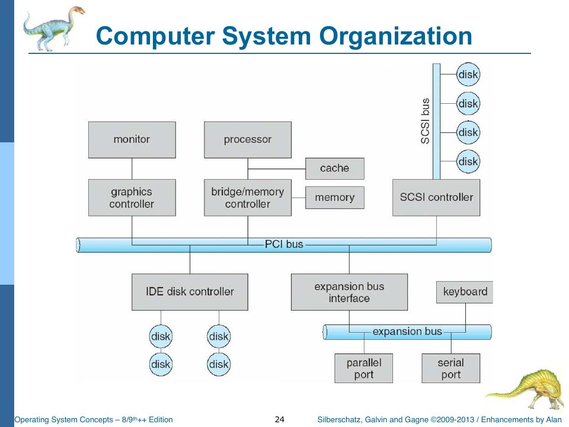
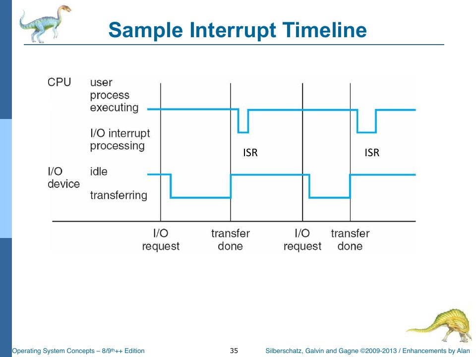
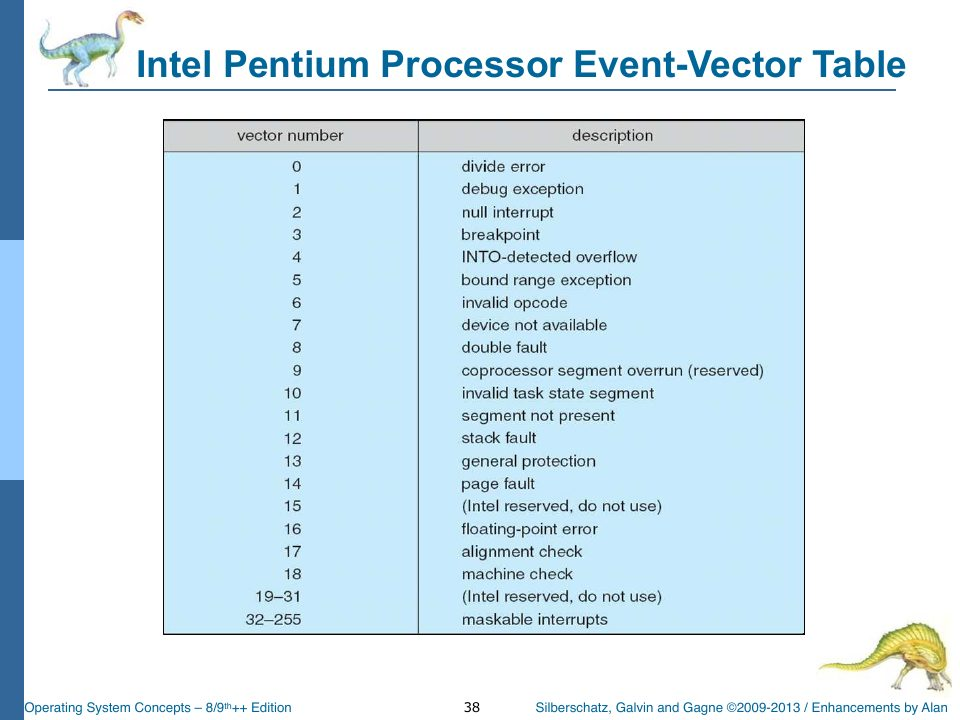
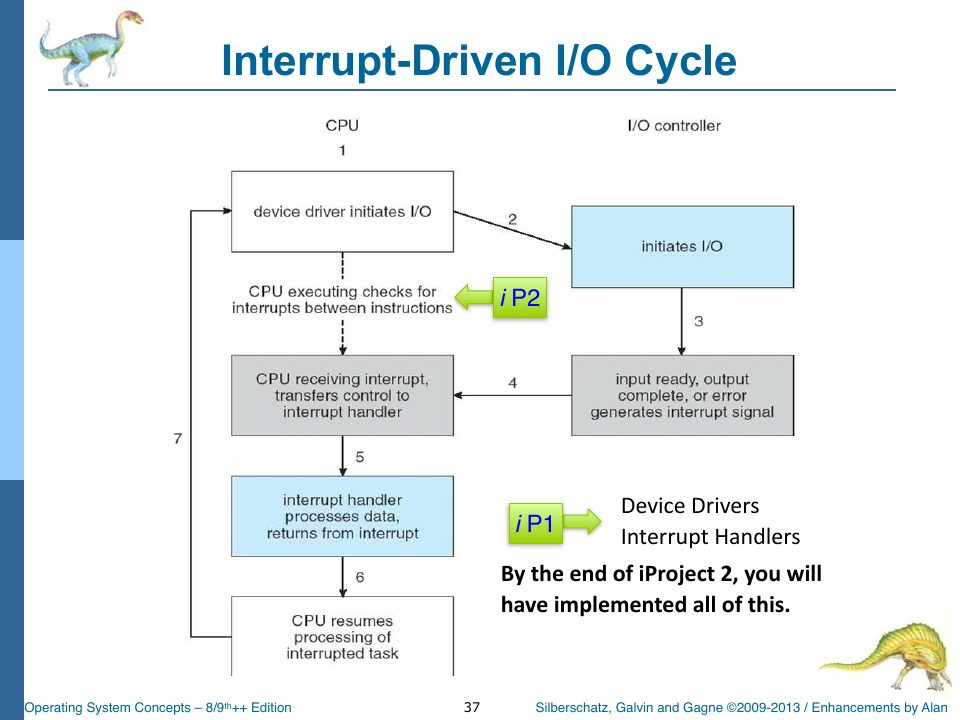

What Is an Operating System?
Slides: Chapter 1, “Introduction, overview, and a little history,” pp. 1–90.
The first chapter of the course is a grand tour, and so is this one. Every layer is lit up in the strip above because Chapter 1 touches all of them briefly. The rest of the book takes them one at a time.
Definitions, and why there isn’t one
The slides offer several definitions and then admit that none of them wins (slides pp. 7–19):
- An OS is “a program that acts as an intermediary between a user of a computer and the computer hardware.”
- An OS is a resource allocator: it manages all resources and “decides between conflicting requests for efficient and fair resource use.”
- An OS is a control program: it “controls execution of programs to prevent errors and improper use of the computer.”
- “Everything a vendor ships when you order an operating system” is “a good approximation… but varies wildly.”
- “The one program running at all times on the computer” is the kernel. Everything else is a system program or an application program.
The goals are similarly plural: execute user programs and make problems easier to solve, make the computer convenient, use the hardware efficiently, manage resources, hide the complexity of the underlying hardware, and “generally implement a layered architecture.”
That last pair is the theme of this whole book. An operating system is an exercise in hiding things. rObSen’s shell has no idea that the disk is really a JSON array in sessionStorage; the disk driver hides it. User programs have no idea which 256-byte partition they live in; the memory accessor hides it. Each layer offers the layer above it a simpler machine than the one it is standing on.
The four-component picture (users → applications → OS → hardware) maps onto rObSen like this. The hardware is the host: Cpu, Memory, MemoryAccessor, Devices. The operating system is everything in source/os/. The application programs are the 6502a hex programs you paste into the input box. The user is you at the keyboard, or GLaDOS pretending to be you.
What an OS has to do, and which project part does it
Slide p. 20 lists the OS’s tasks and tags each one with the project iteration that implements it. It is the closest thing the course has to a table of contents for the project:
| Task (slide p. 20) | Tag | rObSen |
|---|---|---|
| CPU management: scheduling, fairness, non-blocking behaviour, priorities | iP3 | Kernel.krnTimerISR, dequeueNextReadyProcess (Ch. 13) |
| Memory management: virtual vs. physical, protection | iP3 | MemoryManager, MemoryAccessor.translateAddress (Ch. 4, 11) |
| Storage management: the file system | iP4 | DeviceDriverDisk (Ch. 15) |
| Device management: hide hardware dependencies, manage concurrent access | iP4 | the driver classes (Ch. 7, 15) |
| Program execution | iP2 | Cpu.cycle, shellLoad, shellRun (Ch. 5, 9) |
| The CLI (slide p. 22) | iP1 | Console, Shell (Ch. 8) |
How a computer runs: controllers, interrupts, and the boot
A computer is a CPU and a set of device controllers sharing a bus to memory (slides pp. 23–26). Each controller has a local buffer; the CPU moves data between memory and those buffers; and when a controller finishes, it tells the CPU by raising an interrupt.
When the machine powers on, a bootstrap program, usually in ROM, “initializes all aspects of the system” and “loads the operating system kernel and starts execution” (slide p. 25). 
In rObSen, the Start button plays the role of the power switch, and Kernel.krnBootstrap is the bootstrap: it builds the kernel’s queues, starts the console, loads the drivers, enables interrupts, and launches the shell. Chapter 6 walks through it.
Interrupts
Slides pp. 27–37 are the conceptual core of Chapter 1, and the conceptual core of rObSen. The key ideas:
- An interrupt transfers control to an interrupt service routine (ISR), “usually via a switch-case statement or an interrupt vector that contains the addresses of all the ISRs.”
- The interrupt architecture must save the state of whatever was interrupted (registers, program counter) and restore it afterwards.
- Interrupts can be disabled while another is being handled, so none are lost. (“Can you interrupt an interrupt?”)
- A trap (or exception) is a software-generated interrupt, caused by an error or by a user request for an OS service.
- “Today’s operating systems are interrupt driven.” As opposed to polling (“Are we there yet? How about now? Now?”), also called busy waiting.

Here is every one of those five ideas in rObSen:
- Switch-case, not a vector.
Kernel.krnInterruptHandlersays so in a comment: “Invoke the requested Interrupt Service Routine via Switch/Case rather than an Interrupt Vector. TODO: Consider using an Interrupt Vector in the future.” The Intel Pentium event-vector table on slide p. 38 is the alternative: an array indexed by interrupt number whose entries are the handlers.

/* ------------
Interrupt.ts
------------ */
module TSOS {
export class Interrupt {
constructor(public irq: number, public params: any[]) {
}
}
}
That ten-line class is the entire representation of an interrupt: a number saying which (the IRQ) and a list of parameters. The IRQ numbers are global constants:
const TIMER_IRQ: number = 0; // Pages 23 (timer), 9 (interrupts), and 561 (interrupt priority).
// NOTE: The timer is different from hardware/host clock pulses. Don't confuse these.
const KEYBOARD_IRQ: number = 1;
const DISK_IRQ: number = 2;
DISK_IRQ is declared but never raised. rObSen’s disk driver is called directly rather than through interrupts. Chapter 15 comes back to that.

I/O: synchronous and asynchronous
Slides pp. 40–43 distinguish synchronous I/O (the program waits for the I/O to finish) from asynchronous I/O (control returns at once and the OS signals completion later). rObSen’s keyboard is asynchronous from the user program’s point of view, though user programs never read the keyboard anyway. rObSen’s disk is fully synchronous: readBlock returns the data immediately, because sessionStorage.getItem is itself synchronous.
Direct memory access (DMA) (slide p. 45) lets a controller move a whole block into memory and raise one interrupt per block instead of one per byte. rObSen has no DMA. Swapping copies a whole process image with one JavaScript call, which is DMA-like in spirit.
Storage, caching, and the hierarchy
Main memory is “the only large storage medium that the CPU can access directly” (slide p. 46); everything else is secondary storage, organized into a hierarchy by speed, cost, and volatility (pp. 47–50). Caching (“copying information into faster storage”) happens at every level.
rObSen has exactly two levels: the 768-byte Uint8Array that is main memory, and the JSON array in sessionStorage that is the disk. The hierarchy’s main lesson still shows up. The disk is volatile in a way a real disk isn’t: sessionStorage lasts only as long as the browser tab, so closing the tab “loses power” on the disk too. (Reset reloads the page, but sessionStorage survives a reload, so your files survive Reset but not closing the tab.)
Multiprogramming, timesharing, and the mode bit
Multiprogramming keeps several jobs in memory so the CPU always has one to run; timesharing switches among them so often that users can interact with each (slide p. 51). That’s Project Part Three: three programs in memory at once, switched round-robin.
Then the most important hardware feature for protection: dual-mode operation (slides pp. 54–56). A mode bit, provided by the hardware, distinguishes kernel mode from user mode. Privileged instructions run only in kernel mode. A system call switches to kernel mode; returning from it switches back. And a timer lets the OS regain control from a process that would otherwise run forever: “set interrupt after specific period; operating system decrements counter; when counter zero generate an interrupt.”
rObSen has a mode bit:
const MODE_KERNEL: number = 0;
const MODE_USER: number = 1;
var _Mode: number = MODE_KERNEL; // 0 = Kernel Mode, 1 = User Mode.
and the kernel flips it on the way in and out of every handler (enterKernelMode(reason) / exitToUserMode(); Chapter 6). It is honest to say that this mode bit is informational. Nothing in the CPU checks it, because no 6502a instruction is privileged. It exists so you can watch it change in the CPU panel and the host log, and to make the structure of the kernel visible.
The timer is real, though. Cpu.cycle decrements _SchedulerCounter after every instruction and raises TIMER_IRQ when it hits zero. That is slide p. 56 in eight lines of TypeScript, and Chapter 13 reads them.
The management jobs
Slides pp. 66–77 list the OS’s management responsibilities: process management (create, delete, suspend, resume, synchronize, communicate, handle deadlock), memory management (track who uses what, decide what moves in and out, allocate and deallocate, “policing memory access”), storage and mass-storage management, the I/O subsystem (buffering, caching, spooling, drivers), and protection and security.
The section closes with kernel data structures: lists, trees, hash maps, bitmaps (pp. 75–77). Here are the ones in rObSen’s kernel:
| Structure | In rObSen |
|---|---|
| Queue (FIFO list) | TSOS.Queue: the interrupt queue, the input queue, the ready queue |
| Hash map | _ProcessTable: Map<number, PCB>, the process table keyed by PID |
| Array of records | MemoryManager.partitions, the partition table |
| Byte array | Memory.bytes: Uint8Array, physical memory |
| Set | runCheck’s referenced: Set<string> of in-use disk blocks |
| Bitmap | none, although the “in use” flag at the start of every disk block is a bitmap spread across the disk |
Check yourself
- rObSen’s comment in
krnInterruptHandlersays it uses “Switch/Case rather than an Interrupt Vector.” Sketch what an interrupt-vector version would look like in TypeScript. (Hint: an array of functions indexed by IRQ. Chapter 8a shows the syntax.) - The slide asks: “Today’s operating systems are interrupt driven. As opposed to what, exactly?” Find the one place in rObSen that is driven by polling. (Hint: what calls
krnOnCPUClockPulseevery 100 ms, whether or not anything happened?) - Why can’t a user program in rObSen execute a privileged instruction? Is the answer “because the mode bit prevents it”?
Answers
- Something like
const vector: ((params: any[]) => void)[] = [p => this.krnTimerISR(), p => { _krnKeyboardDriver.isr(p); _StdIn.handleInput(); }];and thenvector[irq](params), with a bounds check that traps on an unknown IRQ. - The clock.
setInterval(Devices.hostClockPulse, 100)calls the kernel every 100 ms, and the kernel checks the interrupt queue each time: it is polling a queue. Interrupt sources are event-driven, but interrupt delivery is polled on clock ticks. Real CPUs are similar: they check the interrupt line between instructions. - No. It’s because the 6502a instruction set has no privileged instructions. The mode bit is displayed but never checked. Protection in rObSen comes from the memory accessor (address translation), not the mode bit.